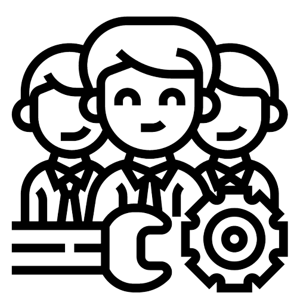

Hey There!
-
I like Designing and making stuff happen through coding, have worked on various projects with Java, PL/SQL, HTML/CSS (also with frameworks like Bootstrap), let me know the VS Code extensions you use.
-
As an Oracle EBS consultant, have worked on software like SQL Developer, WinSCP and Appworx
My Experiences
Senior Software Engineer - Capgemini India
-
Oracle EBS Techno-functional Consultant
-
Handling weekly production releases, which includes reviewing the objects being migrated to the production environment.
-
Critical Job Monitoring in production Environment and resolution in case of failure of those jobs
-
Resolving Client issues through incident tickets
